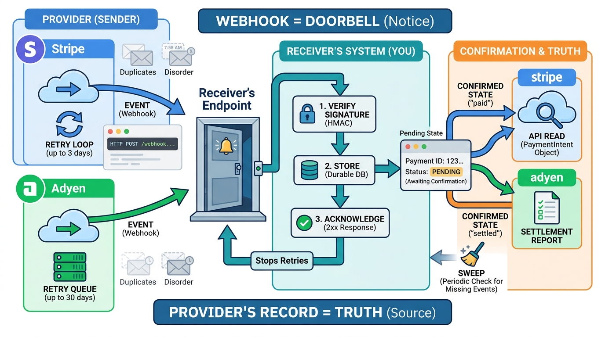

Part IV — INTERFACE: The API as the Product
The Provider Calls You: Webhooks and Events
AI-assisted: researched and written with Claude Code; illustrations generated with Gemini. How this works

Image generated by Google Gemini (gemini-3-pro-image-preview)